This section describes the items of the menu bar. Both the thumbnail window and the image window have a menu bar; they are described together here. Items that exist in only one of the windows are marked "Thumbnail window only" or "Image window only". The keys in [ ] after an item are its default shortcut keys.
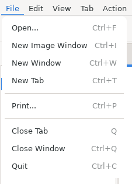
The File menu of the thumbnail window
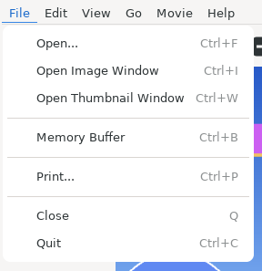
The File menu of the image window
Shows the file open dialog.
"Open selected files" creates a new image window and shows the images.
"Thumbnails of the selected files" creates a new collection tab and shows the files there as thumbnails (a collection). Selected folders (directories) are opened in a new tab each (as with a double click in the directory view). If files and folders are selected together, the files go to the collection tab and each folder to its own tab.
Creates a new, empty image window.
Thumbnail window only. Creates a new thumbnail window.
Image window only. Creates a new thumbnail window.
Thumbnail window only. Creates a new, empty tab.
Image window only. Keeps the image shown in the memory buffer. For details see "Making the image view draw faster" in the Tips.
In the thumbnail window, prints the images selected in the thumbnail view, one image per page. When no image is selected and the preview shows an image, that image is printed.
In the image window, prints the image shown, in the orientation it is rotated to.
Thumbnail window only. Closes the active tab.
"Close Window" of the thumbnail window closes the thumbnail window; image windows that are open stay open. "Close" of the image window closes that image window.
Closes all windows of GImageView.
All thumbnail windows and image windows are closed.
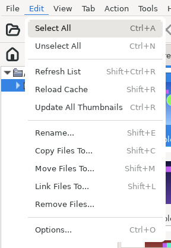
The Edit menu of the thumbnail window (one image selected)
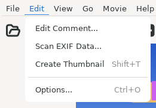
The Edit menu of the image window
Thumbnail window only. Selects all files of the active tab.
Thumbnail window only. Unselects the files of the active tab.
GImageView keeps the selection of each tab. "Unselect All" does not unselect the files of tabs that are not active.
Thumbnail window only. Refreshes the list of the active tab.
Thumbnail window only. Reloads the cache of the active tab.
Thumbnail window only. Creates the thumbnails of the active tab again.
For the differences between "Refresh List", "Reload Cache" and "Update All Thumbnails", see "The difference between Refresh List, Reload Cache and Update All Thumbnails" in the Tips.
Thumbnail window only. Renames the image (file) selected in the thumbnail view.
It cannot be used when more than one file is selected.
Thumbnail window only. Copies the selected images (files) to another directory.
Tab completion can be used in the dialog that selects the directory.
Thumbnail window only. Moves the selected images (files) to another directory.
Tab completion can be used in the dialog that selects the directory.
Thumbnail window only. Creates symbolic links to the selected images (files). Specify the directory to create the links in.
Thumbnail window only. Deletes the selected images (files).
This cannot be undone. Answer the confirmation dialog carefully.
Image window only. Edits the comment of the image shown.
Image window only. Shows the EXIF data of the image shown.
Image window only. Creates the thumbnail of the image shown, in the format of "Cache type for saving" in [Preferences | Thumbnail Cache].
Shows the preferences dialog.
See 6 for the settings.
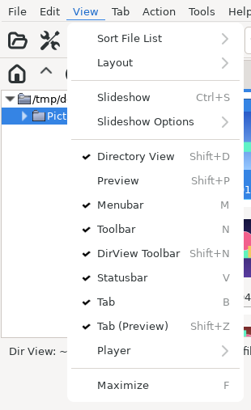
The View menu of the thumbnail window
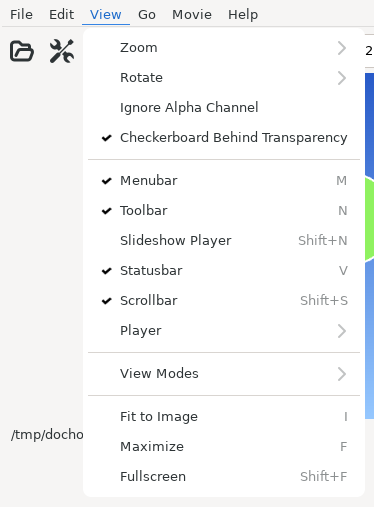
The View menu of the image window
Thumbnail window only. Sorts the thumbnail view in the order chosen.
The order applies to the active tab and to all tabs opened afterwards.
Like the selection, GImageView keeps the order of each tab, so tabs that are not open keep their order. These orders can be chosen:
by Name
by Access Time
by Modification Time
by Change Time
by Size
by Type
by Image Width
by Image Height
by Image Area
"Reverse Order", "Case Insensitive" and "Mix Directories and Files" can be set as well.
Thumbnail window only. Changes the layout of the views (directory, thumbnail and preview) of the thumbnail window: Layout 0 to 4 (Ctrl + 0 to 4) or Custom. For the custom layout, see "About the custom layout" in the Tips.
In the GTK 4 version the layouts are shown as a row of buttons with pictures of the arrangement. In the pictures, D is the directory view, T the thumbnail view and P the preview. The tooltip of a button shows the name and the shortcut key (Ctrl + 0 to 4). The picture of Custom shows the current custom layout.
Thumbnail window only. Chooses the arrangement of the views (directory, thumbnail and preview) of the thumbnail window from the prepared compositions.
In the GTK 4 version the compositions are shown as buttons with pictures of the arrangement. The tooltip of a button shows its name.
Thumbnail window only. Starts a slideshow of the active tab.
The slideshow is set up in 6.5.
Thumbnail window only. The order and the files of the slideshow.
Start from the First / Start from the Selected / Random Order: the order.
Selected Only: shows only the selected images.
Images and Movies / Images Only / Movies Only: the kinds of files shown.
Image window only. Zooms (enlarges or reduces) the image view and sets "Keep Aspect Ratio".
There are Zoom In [S], Zoom Out [A], Fit to Window [W], Fit Width [Shift + W], Fit Height [Shift + H], Keep Aspect Ratio [Shift + A], and 10% to 200% [1 to 9]. For other scales use the toolbar.
When "Keep Aspect Ratio" is checked, the aspect ratio is kept when the image view is enlarged or reduced.
Image window only. Rotates the image view: Rotate 90 Degrees Clockwise [R], Rotate 90 Degrees Counterclockwise [E], Rotate 180 Degrees [D].
Image window only. Shows the image without its transparency.
Image window only. The background of images with transparency is shown as a gray checkerboard. The initial state follows Show a checkerboard behind transparent parts of images in [Preferences | Image Window].
Thumbnail window only. Shows or hides the directory view.
Thumbnail window only. Shows or hides the preview.
Shows or hides the menu bar.
Shows or hides the toolbar.
Thumbnail window only. Shows or hides the toolbar of the directory view.
Image window only. Shows or hides the toolbar for controlling slideshows.
Shows or hides the status bar.
Image window only. Shows or hides the scroll bars.
Thumbnail window only. Shows or hides the tabs of the thumbnail view.
Thumbnail window only. Shows or hides the tabs of the preview.
How the toolbar for playing movies and audio is shown: "Show", "Hide" or "Auto". "Auto" shows it only while a movie or audio file is shown.
Image window only. Switches the way of showing (image display, the movie and audio plugins).
Image window only. Resizes the image window to the size of the image view (the size of the image shown). This is the same as [Fit Window Size to Image] of the toolbar.
The scale of the image view (the size of the image shown) does not change; the image window is resized.
Maximizes the window or restores it.
Image window only. Turns fullscreen on or off.
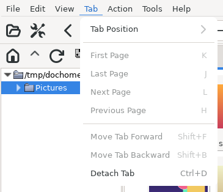
The Tab menu of the thumbnail window (one tab)
This menu exists only in the thumbnail window.
Changes the position of the tabs: Top, Bottom, Left or Right.
Makes the first (leftmost) tab active.
Makes the last (rightmost) tab active.
Makes the next tab (one to the right) active.
Makes the previous tab (one to the left) active.
Moves the active tab one place to the left.
Moves the active tab one place to the right.
Detaches the active tab into a new thumbnail window.
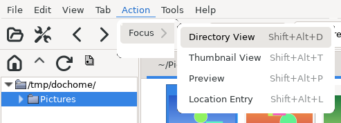
The Action | Focus menu of the thumbnail window
This menu exists only in the thumbnail window.
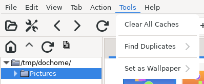
The Tools menu of the thumbnail window
This menu exists only in the thumbnail window.
Deletes all thumbnail caches of the format of "Cache type for saving" in [Preferences | Thumbnail Cache].
Searches the active tab for duplicate images. The submenu chooses how images are compared: "Similarity", "File Size" or "md5sum".
The selection does not matter; all images of the tab are searched. The accuracy of "Similarity" is set in [Preferences | Search].
Makes the selected image the wallpaper of the desktop. "This Desktop" uses the command for the running desktop (environment variable XDG_CURRENT_DESKTOP). Below it are items for each desktop: Xfce, GNOME, KDE Plasma and others.
Images other than JPEG and PNG, and images in archives, are converted to PNG in ~/.gimv/wallpaper/ and that file becomes the wallpaper. The items and commands can be changed with wallpaper_menu in ~/.gimv/gimvrc.
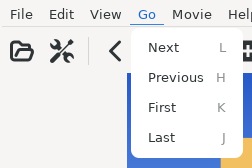
The Go menu of the image window
This menu exists only in the image window.
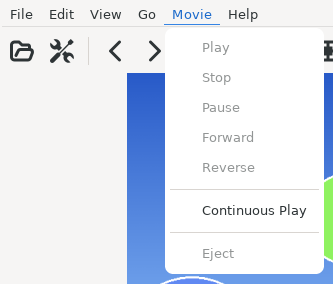
The Movie menu of the image window (an image shown)
This menu exists only in the image window. It can be used while a movie or audio file is shown.
Controls the playback of movies and audio.
When playback ends, the next file is opened and played. The initial state follows continuous play in [Preferences | Movie and Audio].
Can be used while the Xine plugin shows the file. While stopped, it lets you choose an input plugin of xine, and the list of what that plugin can play (MRLs) is shown instead.